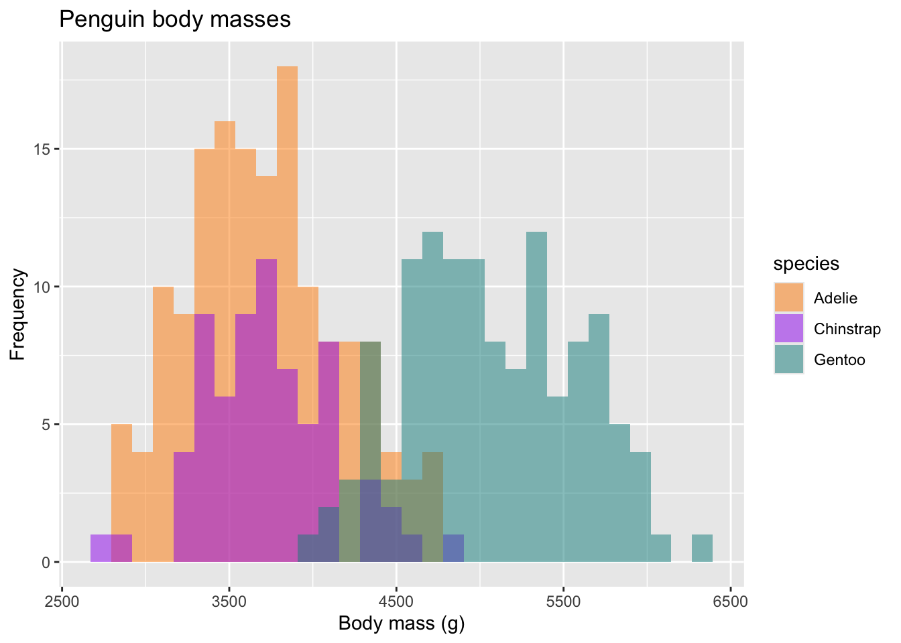

library(ggplot2)
library(palmerpenguins)
ggplot(data = penguins, aes(x = body_mass_g, fill = species)) +
geom_histogram(alpha = 0.5,
position = "identity") +
scale_fill_manual(values = c("darkorange","purple","cyan4")) +
labs(x = "Body mass (g)",
y = "Frequency",
title = "Penguin body masses")